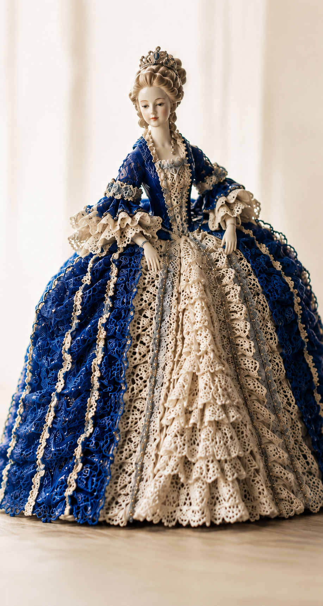
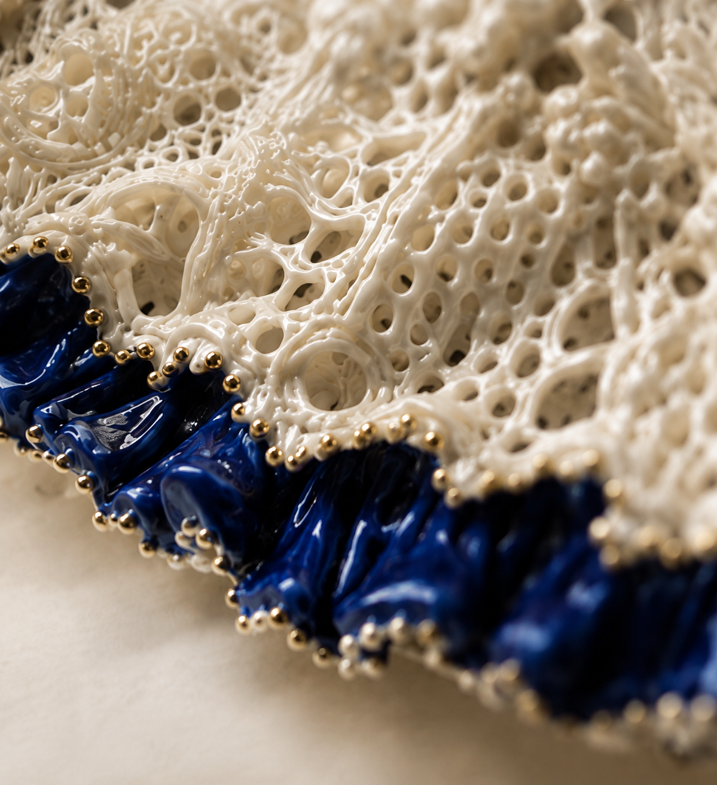

SETO, AICHI / SINCE 1951
愛知県瀬戸市から、手仕事の美しさを。

KM名古屋ドールのレースは、土から生まれ、 手で編み、窯で焼き上げる陶のレース。 針や糸ではなく、筆と指先でひとつひとつ かたちにしています。
瀬戸焼の技と、長年の手仕事の積み重ねが、 繊細で優雅な表情を生み出します。
土と手と炎がつくる、静かな美しさ。
NEW & SELECTED
作品を読み込んでいます…
商品を表示するにはJavaScriptを有効にしてください。
NEWS
読み込んでいます…
内容を表示するにはJavaScriptを有効にしてください。
作品や工房の風景をご覧ください。
商品・お取引についてのご相談はこちら。